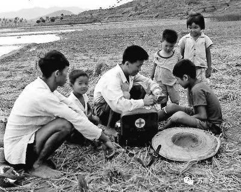
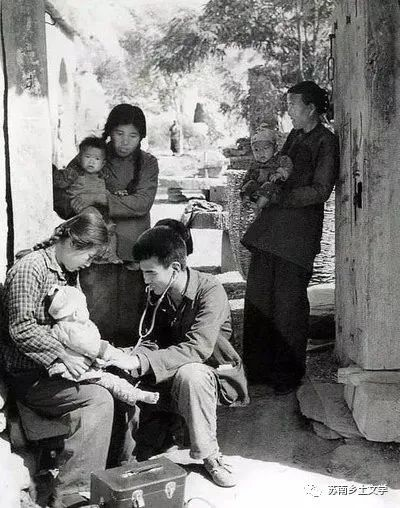
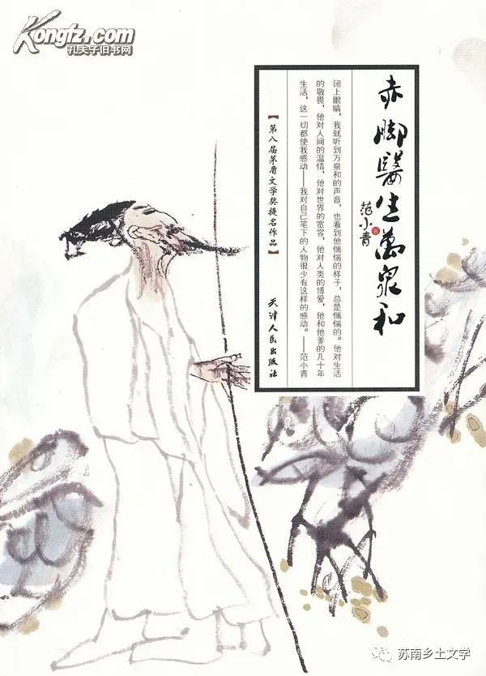

《赤脚医生万泉和》
范小青
范小青继《女同志》之后新作赤脚医生在“文革”中倒下了，其儿子万泉和接替他当了赤脚医生。万泉和没正式学过医，当医生勉为其难，虽先后和几名医生配合行医，但他们先后都走了，最后剩下他一人。在贫困落后的后窑村，如果他不当医生，还会有谁来关心农民的疾病？
一、社会环境
1、时代特色鲜明，阶级身份——富农、中农、贫农、生产大队、工分等字眼。
万人寿是赤脚医生，没有工资，看病记工分，每天记十分人工，是队里的最高工分。
2、农村的迷信。
乡下流行一种迷信的习惯，凡是大肚子女人，想要知道肚子里的孩子是男是女，只要这个念头一出来，出门时随便拉住一个小孩子问他，阿姨肚子里是弟弟还是妹妹，小孩子金口，他说 弟弟那必定是个男孩，大家兴高采烈，他要是说妹妹，大家就只当没听见，打着岔就走开了。
3、混乱的治安。
背娘舅是我们这一带的强盗干的事情，有人在路上走，他从后面悄悄上来，背娘舅是我们这一带的强盗干的事情，有人在路上走，他从后面悄悄上来。
4、知识分子下乡的时代特色。
涂医生骂我爹老东西，我说：＂涂老师，你是知识分子，你怎么骂人，你怎么骂我爹？＂ 涂三江说：“知识分子要接受贫下中农的再教育， 要向贫下中农学习，贫下中农骂人，我也要骂人， 那才叫触及灵魂，改造世界观。”
5、民风淳朴，同一生产大队的人联系比较紧密。
第二天一早，队里的锣鼓声就响起来了，全小队的人都来帮马同志家搬家，家具不多，一会就上了船，然后是各家各户送东西，几个鸡蛋，一袋大米，还有酱肉腌鱼之类塞得船上东一个包包西一个袋袋，到处都是，马同志和黎同志又感动又难过，说不出话来。
6、医疗水平低下：全书都有体现。
7、医疗监管部门虽不完善但已具备。
我们诊所遇到了一件大事情，有人告了我们的状，说我们非法生产药品，我们受到了上级药监部门的审查和处理。这一审查，事情就更大了，很快就顺藤摸瓜发现我的问题，我的问题就是我不是我，我是假的， 我是一个假医生，因为万小三子给我弄的那张行医证是假的。一旦发现了我的假行医证，他们甚至对马莉也产生了怀疑，差一点把马莉的行医执照给吊销了，幸亏马莉求母校的老师托人找了关系，才保住了她的行医证。最后的结果是勒令我们停止自配中药，停业三个月，还罚了我们一笔巨款。这笔罚款把我们彻底打倒了。
8、教育：升学率极低。
上片中不是一件容易的事情，每个大队都有小学，但七八个大队才有一所片中，并不是所有小学毕业生都能上片中，那时候上片中像当兵一样光荣而艰难。
- 
- 
二、文化观念
1、与现在截然不同的职业观和职业选择原因+那个年代特有的乡野医生。
本来我一心要当木匠，并不是因为我热爱木匠这个工作，而是因为木匠的日子比种田的日子好过，我这个人比较懒，贪图省力，你们可能已经看出来了。
除了当干部，再除了出去当兵，还能有什么比当赤脚医生更出息的？
2、旧风俗：鬼节。
这一天正是农历七月十五，过去在这一天，村里家家户户要烧纸钱给鬼过节，一到晚上，村里就会东一堆西一堆鬼火闪闪。可现在不行了，破了四旧，破了迷信，谁敢烧纸给鬼过节，谁就会被打成死鬼，让别人给他烧纸。
3、中西医的结合——观念处于变革时期。
万人寿道：“你说游村啊？那有什么好气的。我气的是你，跟那个姓涂的庸医学了几个月了，屁的长进也没有。“ 我说：“我是中西医结合，而且，而且， 涂老师也不是庸医。“
4、年轻人的娱乐方式，唱的歌：红色歌曲。
老师来的时候，她就跑出去了，她一边跑过院子一边在唱：“万泉河水，清又清，我编斗笠送红军”——前几天来放了露天电影《红色娘子军》，是芭蕾舞里边有这首歌，放过电影马莉就开始唱了，天天 唱出来唱进去。
5、卫生医疗教育观念落后。
在乡下小孩子肚子哇哇是很多的， 可能是 蛔虫， 也可能受了凉， 吃了脏东西， 什么可能都有。他们没有文化， 他们家的 大人也没有文化， 没有文化就不懂道理， 不懂知识， 尤其不懂卫生知识， 你要是跟他讲知识， 说不能吃不干净的东西， 他就会嘲笑你，
6、生育观念，计划生育的时代背景，只生一胎
柳二月说：“你说得轻巧，你自己做赤脚医生的，你又不是不知道计划生育的厉害， 那一阵， 公社宣传队天天到我们大队演出，演的全是计划生育，我是共青团员嘛，就只好带头结扎了，要是不结扎，他们就天天在我家门口敲锣打鼓。"
阅读感悟
万泉和是范小青笔下农民的典型形象，他不同于老照片中记录的悬壶济世、汗洒乡村的赤脚医生，万泉河完全是被逼着成为了一名“赤脚医生”。跟着万泉和足迹，我们看见了农民的悲苦、落后、善良与自私，荒谬的背后处处透着荒凉与悲伤。范小青用细腻的文笔以万泉和，一个患有脑膜炎的傻子视角，完成对中国农民生存状况和农村合作医疗制度兴衰史的转述，也盘活了乡土生活的人物群像。
对万泉和及其周围人物的分析，对我们把握村民心理变化、农村医疗制度发展、村民对疾病和医学的观念提供了文学根据，同时为我们的大创项目提供了典型村民形象和乡村基础设施的参照物。同时，范小青作为知青这样的特殊群体，在审美和个体感情上，给予了乡村特别的尊重，也就意味着和过往的苦难岁月达成了和解。在闭塞灰暗的乡村之外，发现了乡村独立的诗意，这加深了我们对于乡土文学创作走向的理解。